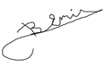

Please Press To Java Tab For Reaching Java Programming Language Courses In English !!!
Python 3 Programlama Dili Dersleri
Python programlama dili son yıllarda her alanda geniş bir uygulama alanı bulmakta olan bir programlama dilidir. Bu programlama dili kullanım kolaylığı ile en yeni programcıların gereksinmelerine uygun olduğu kadar, en gelişkin uygulamalarda da çok başarılı sonuçlar vermektedir. Python aynı NET dilleri ve Java gibi önce kendi baytkoduna derlenmekte sonra, her platform için özel olan yorumlayıcılarla yorumlanmaktadır. Bu çalışma yöntemi ile, herhangibir platformda yazılmış olan bir Python programı, yorumlayıcısının olduğu her platformda, hiçbir değişikliğe gerek olmadan çalışabilmektedir. Bu olanak, birbirini izleyen, derleme-yorumlama sekansları ile gerçekleştirilebildiğinden, Python programları salt derlenen programlara göre biraz yavaş kalabilmektedirler. Buna rağmen, modern donanımlar gerekli olandan çok işlem gücü sağlayabildiklerinden, bu dezavantaj ortadan kalkmış sayılabilir. Günümüzde, modern masaüstü, taşınabilir veya tablet bilgisayarlar, Python programlarını C 'ye yakın bir hızla çalıştırabilmektedirler.
Python programlama dilinin kitaplıkları ayrı olarak yüklenirler. Yüklenen modüller bağımsız çalışır ve ana programa yük bindirmez. Bu çalışma yöntemi, Python programlama dilinin bir başka avantajlı bir yönünü oluşturur.
Python 3 Unicode normalizasyon karakterlerini destekler. Bu da, program öğelerinin tanıtıcılarının Türkçe karakterlerle yazılabilmesine olanak sağlamaktadır. Bu avantaj, Python programlama dili 3 üncü sürümünün öğrenimi için bir başka nedeni oluşturmaktadır.
Python kitaplıkları çok geniştir. Python 2 sürümünün mdül sayısı, Java paketlerinin sayısına yakındır. Python 3 şu anda, Python 2 ye kıyasla daha az modüle sahiptir fakat bu sayı her gün artmaktadır. Bu da, Python programlama dilinin öğrenilmesinin sağlık verilmesi için geçerli bir neden olmaktadır.
Python programlama dili çok geniş kapsamlıdır. Her konu ile ilgili kitaplıklar bulunması olasıdır. Bu sayfalardaki Python öğretiminin hedefi, kullanıcılara Python programlama dili üzerinde bir ön bilgi verilerek SAGE Bilgisayar Destekli Matematik Platformunun daha verimli kullanıalabilmesinin sağlanmasıdır. Burada sadece Python 3.x programlama diline giriş konularını tanıtmaya çalışacağız. Daha geniş kaynaklar, çeşitli Web kaynaklarında bulunmaktadır.
Tüm izleyicilerimize en içten
başarı dilekleri ile ...
Prof. Dr. Bedri Doğan Emir

İletişim Adresi : bedri@bedriemir.com